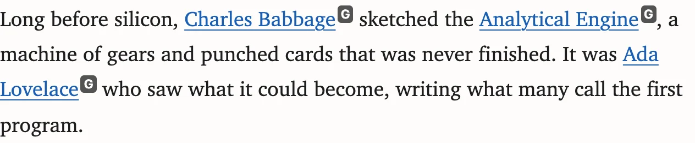
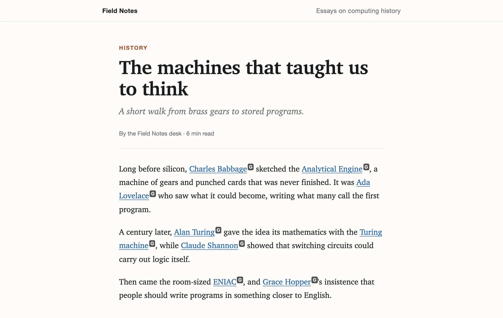
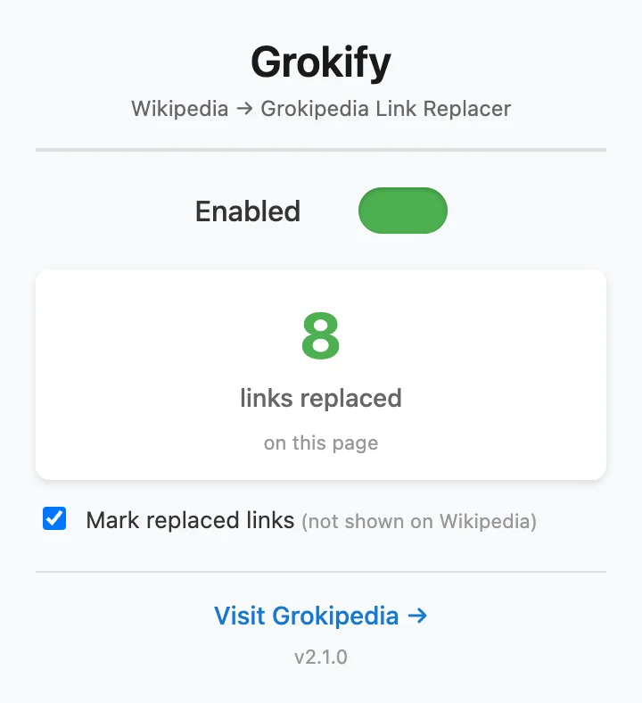
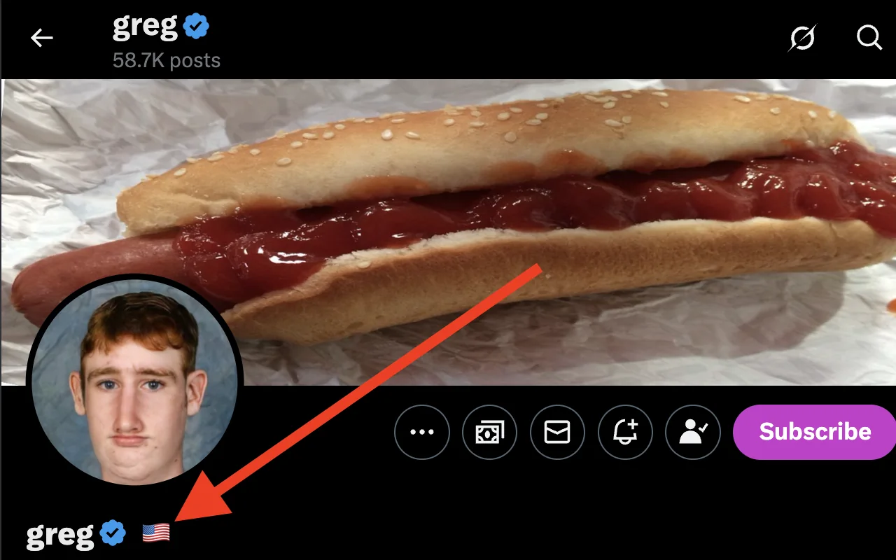

i.
A mark on each link
A small G follows every rewritten link. Links on images are left unmarked, and so is Wikipedia itself, where nearly every link is rewritten.

v2.1 · Chrome extension · Free & open source
Grokify points the Wikipedia links on every site you visit to their Grokipedia articles. Each rewritten link gets a small mark, so you always know where a click will take you.
Works in Chrome, Brave, Edge and Arc.
Section anchors like #History carry over. Talk, File and Special pages are left alone.

01 · Nothing hidden
Rewriting links quietly isn't good enough. Grokify shows its work in three places, so nothing about where you're headed is a surprise.
A small G follows every rewritten link. Links on images are left unmarked, and so is Wikipedia itself, where nearly every link is rewritten.

Hover any rewritten link to see the Wikipedia address it used to point to. Existing tooltips are kept.
The Grokify icon shows how many links it rewrote on the current page, and updates as pages load more.

02 · In your control
03 · Also included
On X profiles, Grokify reads the "Account based in" detail X already provides and shows that country's flag next to the name.

The location comes from X itself, requested with your existing X session. Nothing is sent anywhere else.
04 · Privacy
Grokify has no servers and no accounts. It runs on the page in front of you and doesn't keep a record of where you've been.
No analytics, ads or third-party scripts in the extension.
Links are rewritten locally. There is no Grokify backend.
On/off and "mark links" are the only things saved, in Chrome's own storage.
Every line is on GitHub. Read the privacy policy.
Or install it yourself
chrome://extensions.